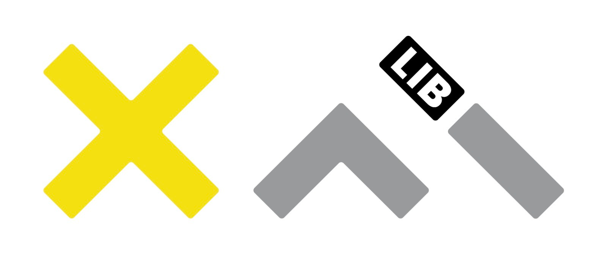

Platform and XUI
XAI-Library

The library has the objective of integrating in a coherent platform explanation algorithms developed within the XAI project or published in the literature. The main architecture of the library distinguishes three data types: tabular data; images data; text data. To have a uniform interface for a blackbox to be explained a dedicated wrapper has been designed that will expose all the functionalities required for classify instances from the model. The objective is to define a high-level grammar to setup an explanable analytical pipeline. By design, the library does not make any assumption on the models to be explained, but it relies on a set of interfaces designed around the most diffuse ML libraries (i.e. SciKit Learn, Keras, Tensorflow, Pytorch). For instance, a predict method is shared among the subclasses of the wrapper to adapt to models coming from any of these libraries. The wrapper is also responsible to apply data transformation to the instances to be classified to have a uniform data layer for all the methods. Different explanation methods generate different explanation formats. Thus, we defined a software interface to encapsulate the different explanation formats, by focusing on a classification of capabilities for each explanation. The functionalities we identified are: feature importance, exemplars, counterexemplars, rules, counterfactual rules. An explanation method can provide one or more of these capabilities, by implementing the corresponding method. The design of the library promotes the extension of the repertoire of methodologies with new ones. The interface allows to integrate existing methods and existing implementation (i.e. external explanation methods) easily, providing only the wrapper implementation. At the time of writing the library has been extended with methods proposed by our research team (LORE [GMG2019], ABELE [GMM2019], LASTS [GMS2020]) and taken from the literature (LIME, SHAP, IntGrad, GradCam, NAM, RISE). The library has been exploited to power a few real-world case studies (detailed in the next section). These analytical cases gave us the possibility to prove the validity of the analytical pipeline of the library and to design suitable visual interfaces to deliver the outcome of the explanation to the final user. At the time of writing, the library has been used to create three interfaces for explanation methods in the healthcare domain.
The Cardiac Risk evaluator
The Cardiac Risk evaluator is a model developed by University of Coimbra for evaluating the probability of death for cardiac reasons in patients admitted to the Emergency Room. We developed a visual interface (to be submitted) to provide local explanations for each classified case. The explanation application exploits the LORE method of the library to provide a set of rules and counterfactual rules to give to the practitioner an explanation of the outcome of the model. A web-based visual interface provides the doctor with an interactive module where the specialist may probe the classification model by means of “what-if” queries and explanations. Besides the explanation capabilities, in collaboration with University of Coimbra, the interface introduces a verification-based approach based on model-testing to compute and visualize the confidence for the prediction, so that the user can better ponder the decision of the algorithm. This verification addresses two aspects: (i) a model-checker exploration of the neighborhood of the instance to discover opposite cases; (ii) a theorem prover to check the compliance of the proposed counter rules with a set of prior knowledge constraints of the case. The interface introduces a novel visual-based widget to explore cases related to the instance to be classified as suggested by the rule and counter-rule. A progressive exploration of the space of possibilities is enabled by a visual timeline that summarizes the path of exploration of the doctor, highlighting the progress of the related cases.
Doctor XAI
Doctor XAI [PPP2020] provides an explanation for the prediction of the next most probable diagnoses for a patient, given his/her recent clinical history. We developed a visual interface that exploits the progressive disclosure of information related to a local instance to be classified and explained. The explanation method relies on LORE and brigns evidence to the practitioners about relevant diagnoses and their temporal evolution. The complexity of this information is presented and modulated through a progressive disclosure mechanism, where not all the information is shown at once, but it is sequenced, with advanced features shown only in secondary views and only at the request of the user. This approach allows also to create separate interfaces with different levels of concepts, for example stopping at the first stages for the patient and giving the possibility to explore further for the medical specialist. Not all users need the same amount of information, and providing all information at once may be overwhelming.
ISIC Explanation with ABELE
In [MGY2021] we built a dedicated interface for an explainer, based on ABELE [GMM2019], for a black-box to classify instances of skin lesions images. The interface is developed to help physicians in the diagnosis of skin cancer. Following the principles of using multiple explanation methods, after classifying an instance, users are presented with two different explanation methods. A counterexample that shows an image classified differently, and a set of exemplar images with the same classification.
—
Research line people
Guidotti
Assitant Professor
University of Pisa
R.LINE 1 ▪ 3 ▪ 4 ▪ 5
Rinzivillo
Researcher
ISTI - CNR Pisa
R.LINE 1 ▪ 3 ▪ 4 ▪ 5

Fadda
Researcher
ISTI - CNR Pisa
R.LINE 3
Naretto
Post Doctoral Researcher
Scuola Normale
R.LINE 1 ▪ 3 ▪ 4 ▪ 5

Bodria
Phd Student
Scuola Normale
R.LINE 1 ▪ 3
Metta
Researcher
ISTI - CNR Pisa
R.LINE 1 ▪ 2 ▪ 3 ▪4

Cappuccio
Phd Student
University of Pisa - Bari
R.LINE 3 ▪ 4
Malizia
Associate Professor
University of Pisa
R.LINE 3 ▪ 4